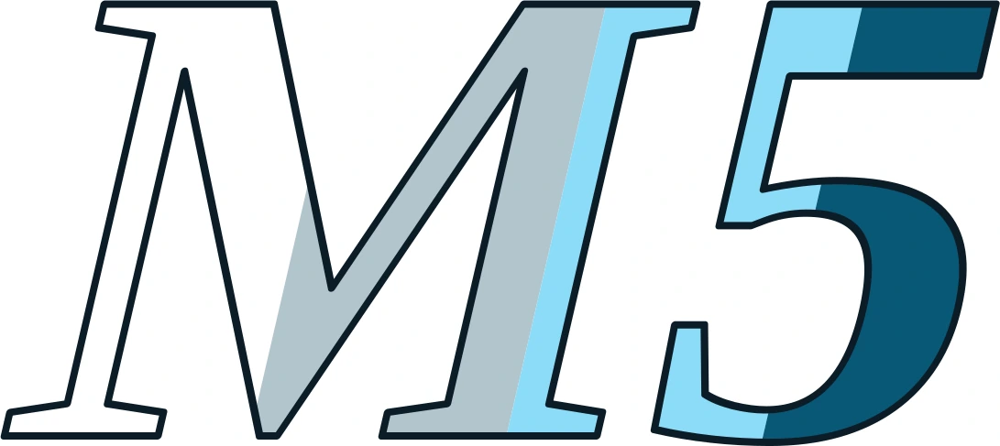

People
People behind the work.
Programme leads, mentors and student leads who brought clinical context, engineering and lived experience into the same room.
Programme institutions
Made together in Nairobi.



M5 Engineering
Model inspirationUniversity of Sheffield
Hackcessible Nairobi draws inspiration from Sheffield’s model.